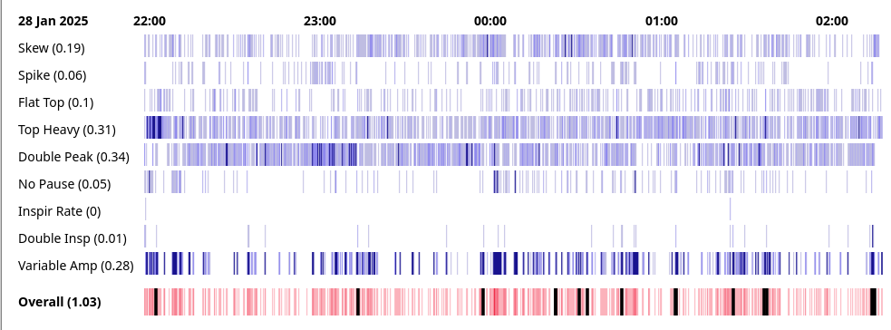
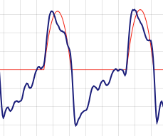
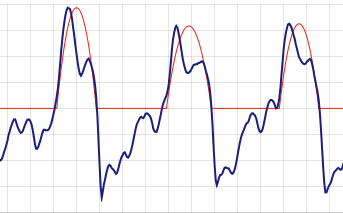
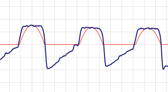
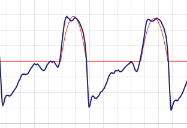
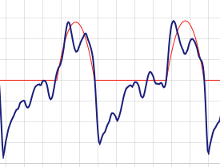
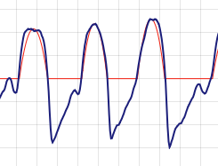
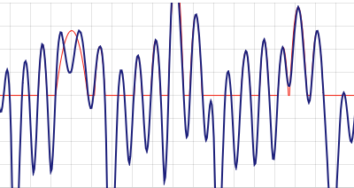
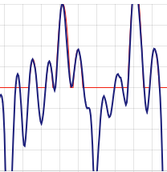
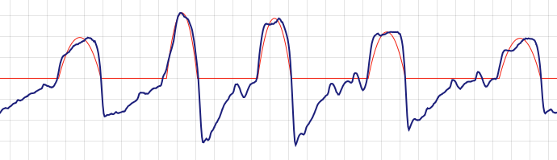

Glasgow Index
Visualisations of common flow limitations from Resmed S10 SD card flow data
Introduction
The Glasgow Index Generator is intended as a tool for those using Resmed CPAP machines for some form of sleep disordered breathing to review the data on the machine’s SD card. It focuses on the detail of “flow limitations”. It compliements but does not duplicate the functions of software such as OSCAR.
Background
Most people using CPAP machines will have been diagnosed with obstructive sleep apnea (OSA / OSAHS). The primary feature of OSA is periodic apneas (complete ceasation of breathing) and hyponeas (partial ceasation of breathing). These will normally be accompanied by oxygen desaturations that lead to short arousals from sleep which in turn lead to daytime sleepiness. By looking for pauses in air flow and oxygen desaturations it is fairly straightforward to diagnose OSA and detect and monitor events.
Apneas & hyponeas are not the only form of sleep disordered breathing that leads to daytime sleepiness. There is an ill-defined group of less obvious sleep breathing problems that can have a similar effect. These are generally referred to as “flow limitations” (the term also has a wider formal medical definition). Flow limitations have the same root cause as OSA (blockages in the upper airway during sleep) and the same effect (daytime fatigue and sleepiness) but the mechanisms linking the two are different: breathing will not stop, there will probably be no oxygen desaturation.
Once diagnosed with OSA an individual will be managed using the Apnea/Hypopnea Index (AHI). The AHI is the average number of apenas and hypopneas experienced per hour. Once the AHI is below 5, the individual will be regarded as treated. It is possible that they will have additional sleep disordered breathing that is not covered by the AHI, does not trigger oxygen desaturations but that leads to poor quality sleep and daytime fatigue. In other words they can be using CPAP for a lengthy period of time, have an AHI of less than 5 and remain with “residual daytime sleepiness”.
The Glasgow Index examines the flow rate data from a CPAP machine’s SD card and looks for the signatures of flow limitations. Each inspiration is rated against 9 characteristics believed to be linked to flow limitation. If an inspiration/breath shows no signs of these characteristics it will be given an index of 0. If it shows all of them (it can’t) it would be given an index of 9. The average index for all inspirations in a data file is the “overall Glasgow Index”. An overall Glasgow index of between 0 and 0.2 would indicate good, clean breathing. An index of 3 would indicate significant problems. You can look at the average index for each of the 9 characteristics individually to give an indication of where any problems lie.
Limitations
It should be stressed that the Glasgow Index is not a medical product. It has not been reviewed or approved by any physician or regulator. It cannot be used to diagnose any form of sleep disordered breathing. It is intended for those making changes to their sleep routine and looking to create a benchmark against which they can assess any improvements.
The Glasgow Index is a crude measure. The overall index is just the 9 individual indices added together. There is no weighting to associate relative importance (some of the characteristics will probably be more important that others to quality of sleep). There is also no equivalent of the “AHI = 5”. One individual may not have daytime sleepiness with overall index = 1 whilst someone else may be unable to stay awake after receiving the same index value.
Examples
The following two examples are from the same individual on consecutive nights.
The pressure was set to 12 cmH2O with no EPR (IPAP 12, EPAP 12). AHI was recorded as 0.53. The following morning included a nap to deal with fatigue.

The overall Glasgow index is 2.34. The variable amplitude index of 0.61 means that the height of inspirations were not settled and constant. They varied from one breath to the next for most of the night. The inspirations were skewed to left or right. With good breathing they tend to be symetrical. Many of the breaths had double peaks, particularly at the beginning of the night. Again this is not typically seen in orderly breathing.
The following night the EPR was set to 3 (IPAP 12, EPAP 9). AHI was recorded as 0.86. The following morning did not include a nap.

The overall Glasgow Index is 1.03. Whilst still a bit variable at times, the amplitude of inspirations is more stable. The problem with skew is much reduced. There are fewer double peaks but they are far from eliminated.
Characteristics
| Characteristic | Description / Definition | Example |
|---|---|---|
| Skew | Is the inspiration balanced (good) or skewed to left or right? (sometimes called a class 4 or 6 flow limitation) Abnormal: 55% of the flow volume has to be on one side of the mid point. |
 |
| Spike | Is the inspiration unexpectedly tall and thin? Abnormal:The trace spends less than 20% of its time above 90% of the peak value. For a parabola it would be expected to be 31.6%, for a sine wave, 28.7%. |
 |
| Flat Top | Is the top of the inspiration flat? (sometimes called a class 7 flow limitation) Abnormal: Look at the middle 50% of the inspiration. Calculate the variance from the mean value. If it is below 0.75, the inspiration is “flat”. |
 |
| Top Heavy | Does the trace spend an unexpected amount of time at high values? Similar to Flat Top but does not require the top to be pancake flat. Abnormal: The trace spends more than 40% of its time above 90% of the peak value. For a parabola it would be expected to be 31.6%, for a sine wave, 28.7%. |
 |
| Double Peak | Ideal breathing has a single smooth peak. Two peaks, typically at either end of a plateau, is a sign of disordered breathing. (sometimes called a class 2 flow limitation) Abnormal: Search the inspiration curve for a maximum and continue searching for another peak with a value more than 1 unit over an intermediate low. |
 |
| No Pause | Relaxed breathing has inspiration followed immediately by expiration and a pause. Sometimes expiration goes straight into the next inspiration without a pause. Abnormal: Use the first second of expiration to extrapolate an “end” to the expiration. If this end is 0.4s or less from the start of the next inspiration (normally more than 1s), flag a ‘no pause’. |
 |
| Inspir Rate | Normally breathing rate is between 12 and 20 breaths per minute. Abnormal: Calculate the inspiration rate using the time for the “last 5 inspirations”. Flag when above 20 inspirations per minute.  |
|
| Double inspiration | In some disordered breathing there can be multiple inspirations for each full expiration. Abnormal: Allocate each inspiration to an expiration. Any additional inspirations remaining are “double inspirations”. |
 |
| Variable Amplitude | Orderly breathing will have a broadly stable amplitude. Abnormal: For each inspiration, look at the previous 4, calculate the mean amplitude and calculate the variance from it. If the variance is over 4, flag variable amplitude.  |
|
Operation
Open the Glasgow Index web page and click on the “Browse” button. Nagivate to the file to be examined. This should have the name <DATE>_<TIME>_BRP.edf.
On the SD card from the Resmed CPAP machine look in the DATALOG directory under the subdirectory for the day you are interested in.
If you have been using OSCAR software to review CPAP activity, navigate to the base directory (found on the “Help→Troubleshooting → System Information” pop-up screen) and then move to
<BASE_DIR>/Profiles/<YOUR_PROFILE_NAME>/ResMed_<YOUR_SERIAL_NO>/Backup/DATALOG/<YEAR>
The flow rate data is held in the *BRP.edf files. There is one file for each CPAP session. That is for each time the machine is switched on – not for each night.
The web browser should read in the file, perform the required calculations and display the heat map as shown above.
The session average of the index for each characteristic is displayed after the text at the start of each line.
Breaths are grouped into “cells” (The number of breaths in each cell depends on the length of the CPAP session and the width of the available screen). The average index value for the cell is calculated and displayed as a vertical line one pixel wide. The values for each cell are displayed next to each other to form the heat map. Higher indices (indicating worse breathing) are shown in darker colours. Lower indices (indicating better breathing) are shown in ligher shades.
The more white that is visible in the heat map the better.
For each cell, the index for all the characteristics is added up and displayed in the bottom strip as the overall index. This may also include thick black lines. This is where the inspiration volume does not match the expiration volume (with a 20% margin of error) and normally shows locations of very poor breathing. This can be the likes of mask leaks, coughing or aerophagia.
The user can click on a location in the heat map and see the detail flow rate graph below. The vertical and horizontal scaling is fixed so that each time a cell is selected the user is presented with readily comparible data. At times this may lead to data being lost off the top/bottom of the screen. There are back / forward buttons available to move through the flow rate data. A thin red “idealized inspiration” is shown to aid in comparison. This should not be seen as a realistic, achieveable goal but just as a visual aid.
Notes
The role of “flow limitations” in daytime sleepiness has been noted for a considerable time. See this paper from 2015 citing a number of previous studies. It is noted in that the pressures best suited to treat flow limitations in an individual are often lower then those for apnea/hypopnea. This could give rise to a tension between treating flow limitiations and OSA.
CPAP machines are generally developed to focus on apena / hypopneas. Their algoritm my include some form of “flow limitiation index” but this can be tailored to focus on managing apena / hypopneas rather than limiting flow limitiations themselves. A discussion from 2015 of CPAP algoritms (includes Resmed S10) can be found here.
It seems using bi level PAP / pressure support, by its nature, often helps flow-limitiation-based disordered breathing. Basic CPAP machines only provide a limited level of pressure support. It may be helpful for those with flow limitation issues to consider the use of a bi level machine but this is not currently standard medical practice.
© 2025 DaveSkvn